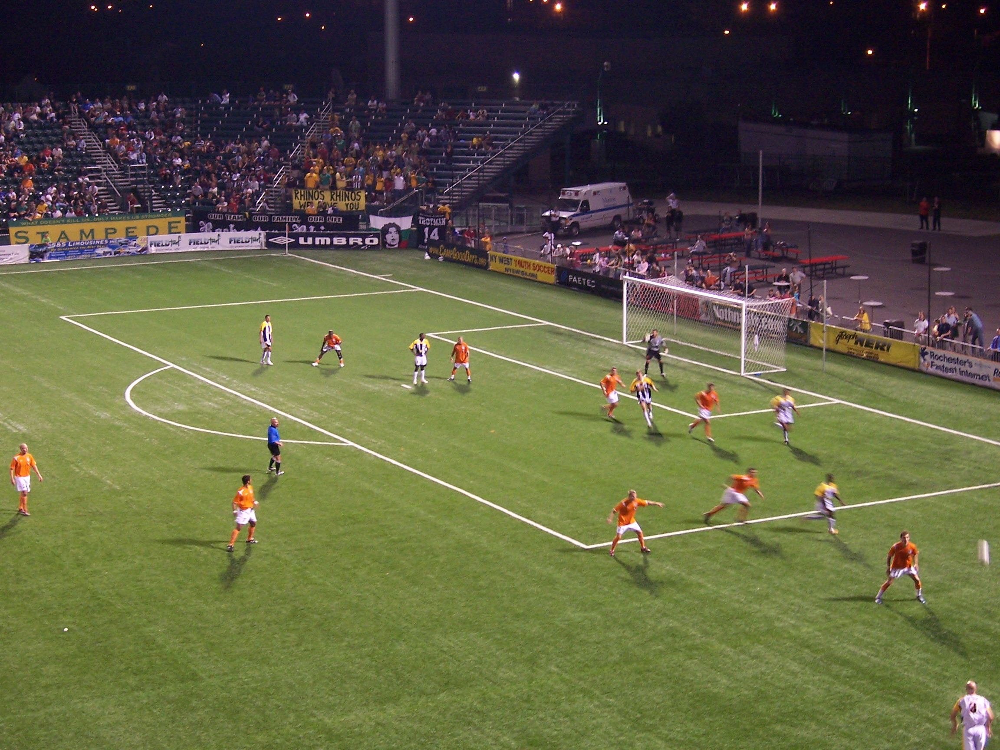
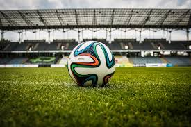

"Sport has the power to change the world. It has the power to inspire, it has the power to unite people in a way that little else does. It speaks to youth in a language they understand. Sport can create hope, where once there was only despair. It is more powerful than governments in breaking down racial barriers. It laughs in the face of all types of discrimination." - Nelson Mandela
 
Soccer is played and loved all over the world. It is what brings people from many different backgrounds and heritages. It is special connection between people because they all play for the same reason. To have fun.
It is more popularly known as "football" around the globe. It is a phenomenon which has been bringing generations and countries together for the love of the beautiful game, and every four years the competition of the World Cup allows for everyone to gather in one place to watch history unfold.
People of all ages enjoy kicking a ball around with some nets in place. However, the real fun lies in the competition and the sportsmanship which comes along with it. The bonds built between players, coaches, and even referees is symbolic of how people with even language boundaries can play together in a peaceful and enjoyable manner.
It is a sport unlike any other, and the experience of making a pass, dribbling a ball, or even scoring a goal is surreal. This amazing feeling is something everyone can share who also shares a passion for the game. That is all soccer is: Passion. When others share this ambition and this passion, friends and families are made through the love for this game
| Popular Soccer Leagues Around the World | ||||
|---|---|---|---|---|
| La Liga | Bundesliga | Barclays Premier League | Serie A | MLS |